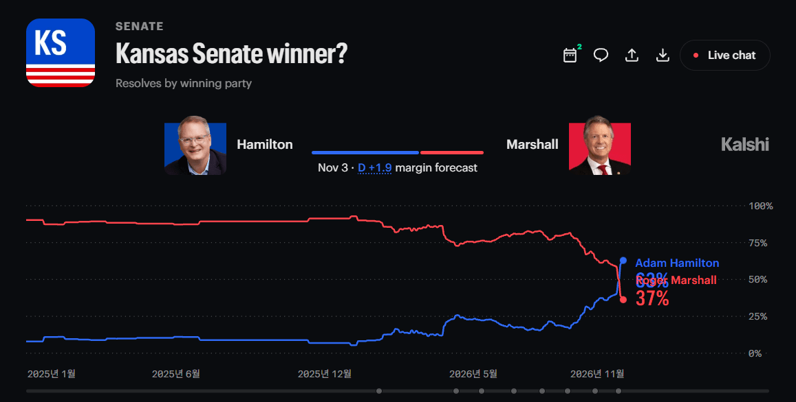

어제 여론조사에서 앞서면서 감리교회 목사 애덤 해밀턴이 현직 상원의원 로저 마셜을 상대로 베팅 사이트 Kalshi 기준 당선 가능성을 역전했다.
만일 해밀턴 후보가 당선된다면, 캔자스는 100년만에 민주당 소속 상원의원을 선출하게 된다.

어제 여론조사에서 앞서면서 감리교회 목사 애덤 해밀턴이 현직 상원의원 로저 마셜을 상대로 베팅 사이트 Kalshi 기준 당선 가능성을 역전했다.
만일 해밀턴 후보가 당선된다면, 캔자스는 100년만에 민주당 소속 상원의원을 선출하게 된다.
세계2차대전 전후로 민주당과 공화당이 반대 포지션이었다는 게 놀라움 ㅋㅋ 하긴 링컨이 공화당 출신이니
이야 트럼프가 신기록 써주네
'역사적 순간'
ㅋㅋㅋㅋㅋ 진짜 대단하다 트럼프!!
노머고 ㅋㅋ 이번 선거 개발리겠네
여론조사기관마다 차이는 있지만 앞선 것은 팩트네
새로운 역사가 쓰여지고있어!!!
얼마나 좆같이 했으면 ㅋㅋ
미국내 기름값만 봐도 그냥 사람들 존나 화날거같긴 함 ㅋㅋㅋㅋㅋㅋ
트럼프 하는 꼬라지 보면 ㅋㅋㅋㅋㅋㅋㅋㅋㅋㅋ
엥 개드립애들 칼시 폴리마켓같은 사설도박 토토는 반드시 금지시켜서 접근도 못하게 막아야한다는게 주류의견이었는데 이걸 왜들고옴ㅋㅋ
도박 배당도 여론조사처럼 심리를 볼 수 있는건데 너무 배척하는애들이 많더라
얼마나 갮짓을하면 100년만에 바뀌냐
트럼프가 얼마나 개병신이면 100년만에 ㅋㅋㅋㅋㅋㅋㅋㅋㅋ
시골에서 농사짓는 농부들은 기름이랑 비료 살 돈 대느라 트랙터 팔고 이것저것 팔고 빚도 진다는데. 진짜 대깨골수 마가 레드넥도 이러다간 우리 지역 쫄딱 망해서 디트로이트처럼 되겠다를 넘어서 나라가 망하겠다란 생각 할듯
이정도면 도황 업적 맞다
노예농장하던 민주당시절이후로 처음인건가
말이되나 ㅋㅋ 까고보면 아닐거 같은데
진짜 트럼프 놀랍다 ㅋㅋ
선거 발리면 트럼프가 무슨 미친짓을 할지 예상이 되지 않는다
하딩과 뷰캐넌은 그저 범부일뿐
근데 보통 이런 경우 샤이들이 숨는 여조가 많아서 결과는 나와봐야 함.
캔자스에서? ㄷㄷㄷ
100년전이면 민주당이 흑인나무를 주의 권리라고 말하던 시절이자나..